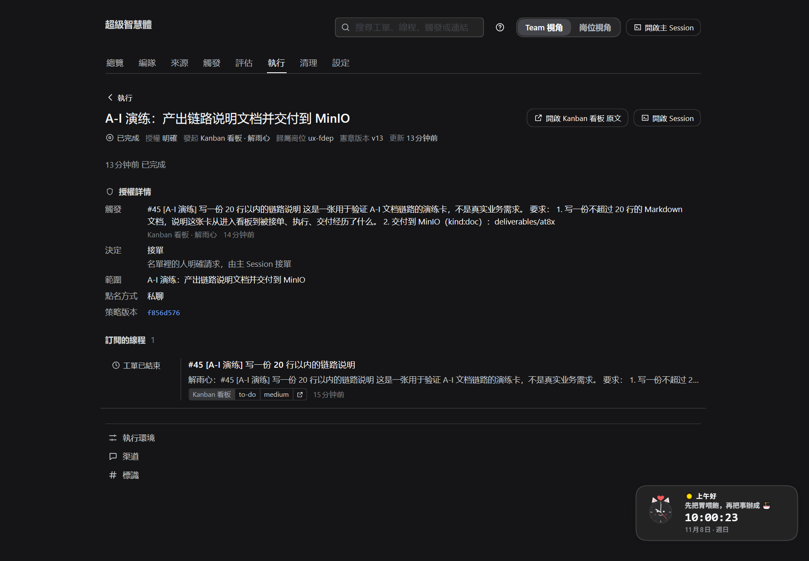
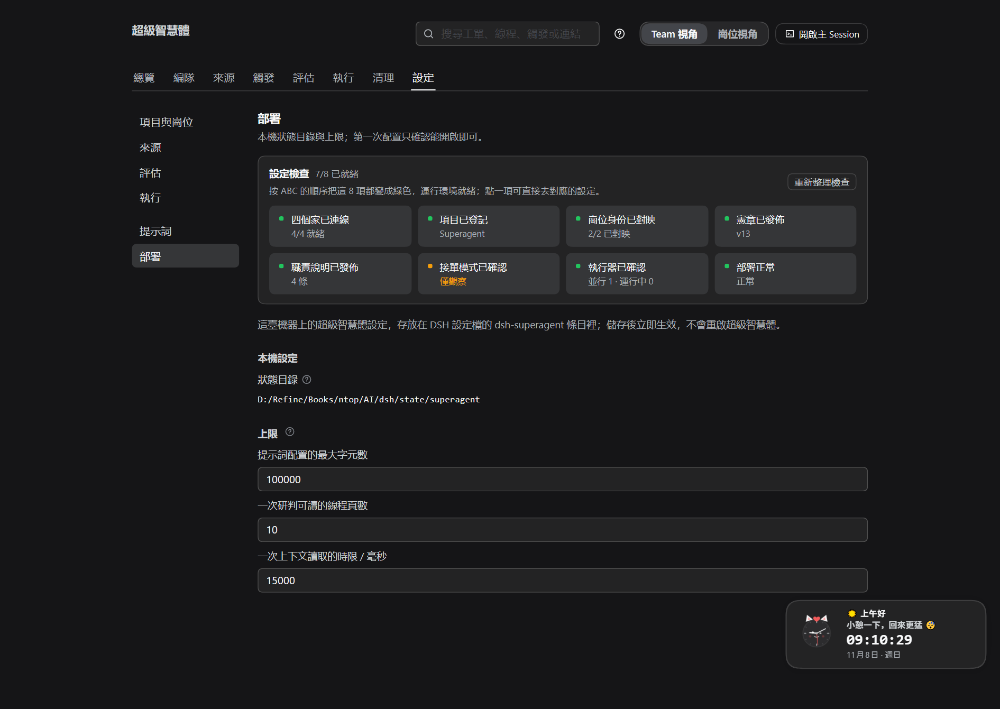
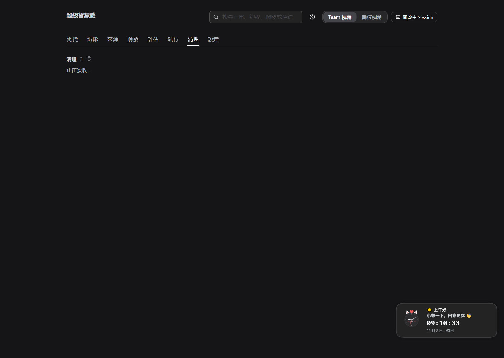
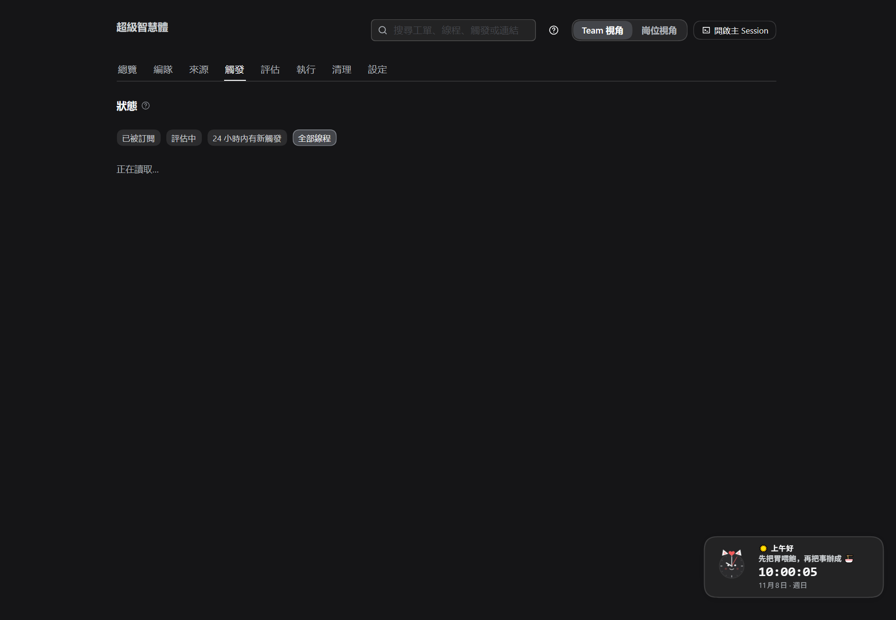
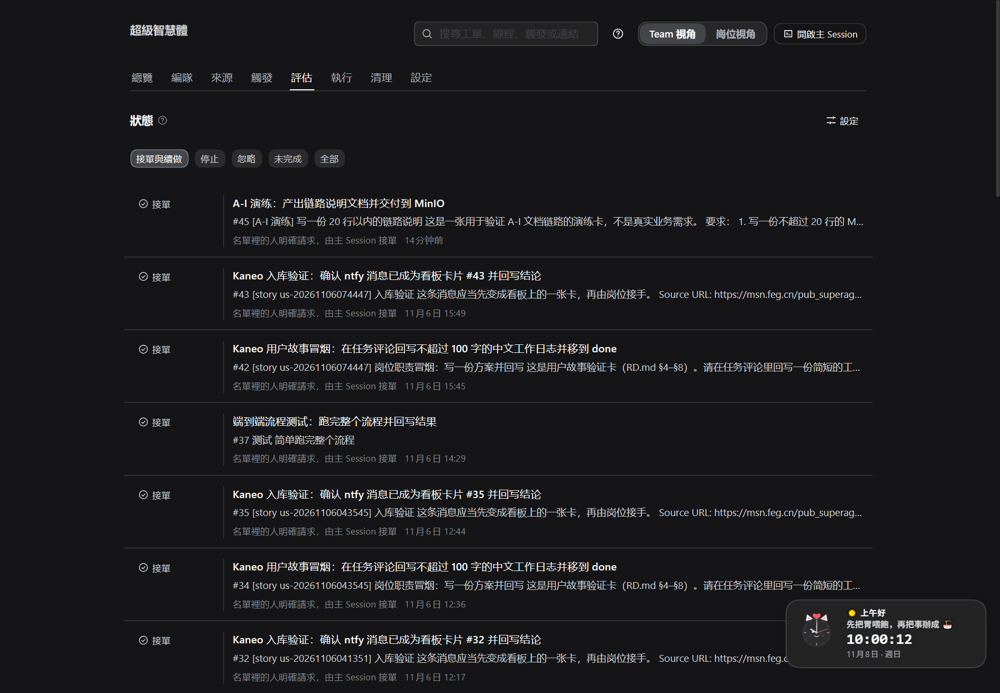
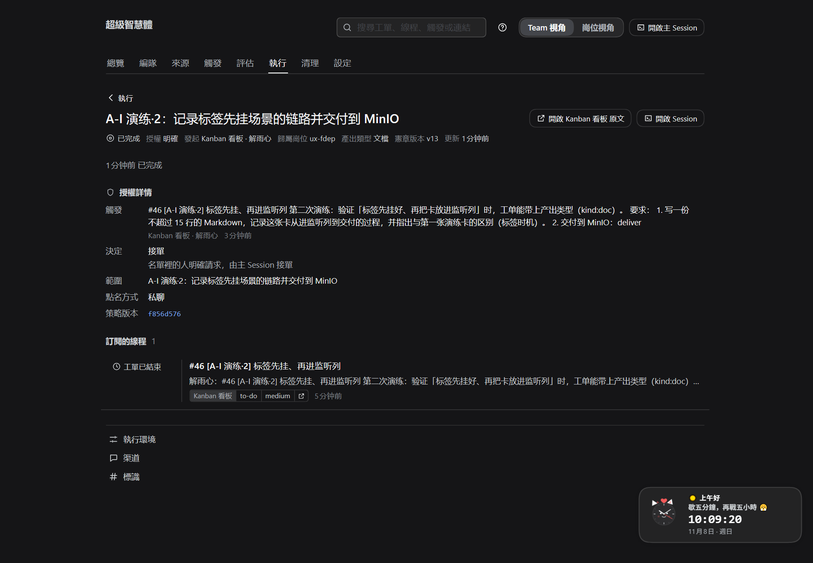

ABC 准备DEF 需求→工单GHI 执行→交付演练可复核
A 准备 → B 登记 → C 触发 → D 判断 → E 闸门 → F 执行 → G 反馈 → H 异常 → I 交付。
最后附本机真实演练卡 #45 / #46 的截图与数字。
铁律：没有宪章不开工 · 职责必须先定义 · 岗位必须承接 · PM 默认不执行工人职责。四道闸门在主机侧，提示词改不动。
| 阶段 | 一句话 | 产物 | 在哪看 |
|---|---|---|---|
| A 准备 | 四个家接通、八项自检全绿 | 可运行环境 | 来源 / 设置检查 |
| B 登记 | 项目、本机岗位、宪章、职责 | 本机 Team + 规则 | 项目与岗位 |
| C 触发 | 卡进监听列 / 消息到达 | 触发 + 线程 | 触发页 |
| D 判断 | 看板卡路由；聊天候选评估 | 决定（接单/忽略/未完成） | 评估页 |
| E 闸门 | 宪章→PM→职责→岗位，全过建单 | 工单 | 执行页 / 工单页 |
| F 执行 | 派工、工作目录、按提示词干 | 交付物草稿、工作记录 | 工单页 / 编队页 |
| G 反馈 | 五种报告回到卡片与面板 | 进度与结果 | 工单页 / 卡片 |
| H 异常 | 待回答/待验收/受阻/失败… | 处置记录 | 工单页 / 异常队列 |
| I 交付 | PR / MinIO / 评论；验收后结束 | 可验收成果 | 卡片 / MinIO / 清理页 |
| 时刻 | 发生了什么 | 证据 |
|---|---|---|
| 09:45:39 | 建卡 #45 到 to-do，负责人 = 前端岗位（解雨心） | 看板卡 #45 |
| 09:46:02 | 决定 = 接单（名单里的人明确请求，由主 Session 接单） | 评估页 |
| 09:46:05 | 派工开始（会话 + 工作目录已建） | 工单页「派工历史」 |
| 09:47:11 | MinIO 写入 rehearsal.md（1810 字节）并回读 | MinIO ateam |
| 09:47:27 | 报告 ready → 工单结束（completed） | 工单页 |
| 09:47:34 | 卡片评论回写 bucket/key + 结论 | 看板 #45 评论 |
完整数据与截图见 §11；卡 #45/#46 现在还在看板 done，可点开核对。
细节：ABC.md。
| 登记项 | 本机现状 | 要点 |
|---|---|---|
| 项目 | Superagent（at8xrho…） | 下拉选，不手抄 id |
| 本机岗位 | ux-fdep（解雨心）、api-fdep（高洁） | 本机 Team = 这台机器演的岗位组合；同一岗位不要两台登记 |
| 宪章 | v13（README.md） | 每周最多一版；流程/交付/PM 授权写这里 |
| 职责 | duties/ 一职责一文件；岗位卡下拉绑定 | 文件里的承接岗位是兼容写法 |
注意：doc / req-analysis 仍写着承接岗位 pm-rsi，但本机当前没有 PM 岗位——暂时无人承接，是数据现状不是故障。
卡进入配置的监听列（本机 to-do）；不在列不触发。
负责人/创建者在该来源的发起人名单里；否则在来源层被过滤。
duty: / kind: / repo: 在进监听列之前挂——触发那一刻读取；后挂会缺席。
轮询默认 60 秒；一张卡 = 一个线程。演练 #45（后挂）与 #46（先挂）就是这条规则的对照实验（§11）。
| 需求从哪来 | 处理 | 面板记录 |
|---|---|---|
| 看板卡（含 ntfy 入库卡） | 显式请求 → 直接接单路由 | 接单（名单里的人明确请求） |
| 聊天 · 名单内点名 | 显式请求 → 路由 | 接单 |
| 聊天 · 名单内没点名 | 推断候选 → 按规则评估（四问） | 接单 / 忽略 / 未完成 |
| 聊天 · 名单外 | 策略层过滤 | 来源页显示原因 |
接单模式（关闭 / 仅观察 / 自动接单）只影响推断候选；看板卡在任何模式都会进入闸门。本机当前「仅观察」，看板卡照常建单（§11 已验证）。
| 闸门（按检查顺序） | 不过时 | 怎么修 |
|---|---|---|
| 项目已发布宪章 | 这个项目还没有发布宪章，不能开工 | 发布宪章 |
| PM 不执行工人职责 | PM 岗位默认不执行工人职责… | 改派 Worker；或在宪章写 PM 可执行职责 |
| 职责已定义 | 卡片声明的职责在职责说明里没有定义 | 在 duties/ 加 duty:<id> |
| 岗位承接该职责 | 这个职责由别的岗位承接 | 岗位卡下拉选中它 |
工单上有：标题/范围 · 授权（强度·发起人·决定·规则·政策版本）· 归属岗位 · 职责简报。
worker-<工单 id>| 你改的 | 效果 | 生效 |
|---|---|---|
| 沟通方式 | 何时通知人、消息怎么写、Review 怎么回 | 下一次模型请求 |
| 工单范围 | 何时继续、何时停下来交草稿 | 下一次模型请求 |
| 交付要求 | PR 证据、自动合并、提交作者 | 下一次模型请求 |
| 内置段落覆写 | 替换某段内置文字；升级后默认变了会标「默认内容已更新」 | 下一次模型请求 |
| 技能 | 团队知识，执行器需要时加载 | 下一次模型请求 |
提示词只管"怎么说、怎么干"；工具校验、授权（Mandate）、闸门都在代码里。
| 报告 | 含义 | 面板 | 卡片/消息 |
|---|---|---|---|
| progress | 还在干 | 执行中 | 内部；答人问题时会带出去 |
| ready | 可验收（有 PR 待验收；无 PR 完成） | 待验收 | 结果评论 |
| blocked | 缺前置 | 待处理受阻 | 写清卡点 |
| failed | 执行失败 | 待处理失败 | 记错误；网络类先自动重试 3 次 |
| dropped | 无需处理 | 已结束 | 静默；后续消息可恢复 |
执行器只报告；宿主写卡片评论、移认领列/交付列、通知人。本机实测：ready 后 7 秒内评论出现 bucket/key，卡从 in-progress 到 done。

编队页看「在飞职责 / WIP」；执行页按状态筛选。
| 你看到的 | 含义 | 你做什么 |
|---|---|---|
| 排队中 | 等并行名额 | 等；或调大并行数 |
| 待回答 | 它提了一个具体问题 | 在卡片/线程回答 |
| 待验收 | 做完了等人看 | 看结果/PR；合并或确认 |
| 待处理受阻 | 缺权限/凭据/信息 | 补上后回消息，或重试 |
| 待处理失败 | 启动/执行出错 | 修好后重试（同会话/目录/PR） |
| 输入未送达 | 消息没送到 | 自动重试；仍失败可手动重试 |
| 等待新触发 | 本轮干完 | 线程新消息会唤醒 |
| 已结束 | 完成/合并/关闭/停止/无需处理 | 看结果；按需清理 |
不派新活、不评估、不回复；正在跑的回合不打断。
结束当前派工，保留会话与目录；收回授权，线程消息不自动恢复。
同一会话、目录、分支、PR 继续；失败/受阻/输入未送达可用。
运行中的派工带恢复说明重开；等待/可验收/受阻/失败保持。
| 产出类型 | 载体 | 回写 |
|---|---|---|
| kind:code | 代码 PR（repo:owner/name 说明动哪个仓库） | PR 链接 + 评审状态 |
| kind:doc / plan / memo / log | MinIO：deliverables/<项目>/<工单>/<文件>，写完回读 | bucket/key + 一句摘要 |
| 其他 | 卡片评论（追加式） | 结论 + 状态推进 |
有 PR：待验收 → 合并/关闭后结束；无 PR：ready 直接完成；半成品只能 blocked 并写清草稿在哪。


部署页：状态目录与部署检查。清理页：已结束职责的工作区与 Session 登记；默认只解除登记、不删目录，Session 日志不删。
| 环节 | 数据 |
|---|---|
| 卡 | #45 ·「[A-I 演练] 写一份 20 行以内的链路说明」· 负责人 解雨心 · 09:45:39 建卡 |
| 决定 | 接单 · explicitRouted（09:46:02） |
| 工单 | f0521424… · 归属 ux-fdep · 强度 explicit |
| 报告 / 结束 | ready（09:47:27）→ completed |
| 交付物 | ateam/deliverables/…/rehearsal.md（1810 字节，已回读） |
| 卡片 | to-do → in-progress → done；2 条评论；耗时 1 分 48 秒 |



改进：建卡流程改为"先建卡 → 配标签 → 再拖进监听列"；已写回 DEF/GHI 与 ABC 建卡规范。
| 核对项 | 结果 |
|---|---|
| 看板卡显式、不看接单模式 | ✅ 与 policy.ts 一致 |
| 闸门顺序 宪章→PM→职责→岗位 | ✅ 按 runtime.ts 排序 |
| 准备命令失败重试 | ❌ 原写"重试会再准备" → 改为：空残留目录删掉重跑，非空先手动清理 |
| 标签读取时机 | ❌ 原文未强调 → 补"先挂标签再进监听列"（#45/#46 验证） |
| ABC 步骤编号 | ❌ 两处 "3." → 改为 4. |
| ABC 评估 tab 适用范围 | ⚠️ 未说明 → 补"只作用于推断候选" |
A 准备 → B 登记 → C 触发 → D 判断 → E 闸门 → F 执行 → G 反馈 → H 处置 → I 交付。
卡住按状态处理；演练可复跑（A-I.md §11）。